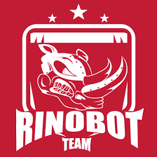

Sobre Mim
BIO
J'ai 24 ans. Je suis étudiant en 8ème période du cours Systèmes
d'Information à l'Université Fédérale de Juiz de Fora. Naturel et
résident de Juiz de Fora.
Les intérêts incluent: les jeux vidéo, les échecs, les chats et les
défis mentaux.
-
Monitor de Estrutura de Dados
Java
Fui monitor das disciplinas Estrutura de Dados I e Laboratorio de Programação II
-

Rinobot
C++
Trabalhei com a equipe Rinobot na categoria VSSS(Very Small Size Soccer) sub-categoria Visão Computacional. Minhas responsabilidades eram de documentar e limpar o codigo.
Durante minha estadia na equipe, conquistamos um premio de 3º Lugar na competição WinterChallenge2018. -
Iniciação Cientifica
Python
Trabalhei no projeto "Geração de Sequncias Curriculares Adaptativas baseada no Perfil dos Alunos e Materiais Didáticosutilizando o Algoritmo Presa-Predador" com extração de dados com os algoritimos genetico e evolutivo.
-
Trabalho de Conclusão de Curso
Engenharia de Software
Estou atualmente fazendo meu TCC na correção e melhoria da ferramenta BVR(Base Variability Resolution).
-
Grupo de Educação Tutorial
Javascript
Durante minha participação na equipe GET ajudei no desenvolvimento de um aplicativo utilizando a ferramenta expo.